Pictures of different people just hanging out at the conference
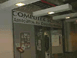
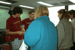
Things really started to happen when we opened registration the day
of the conference.
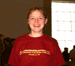
Amy models one the beautiful conference volunteer shirts.
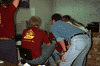
There was still work to be done on the server for the programming contest,
and the time was running short.
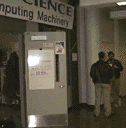
It was an interesting experience to walk out of the office and see
Steve Wozniak hanging out in the hall way.
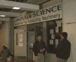
Woz is a very easy person to talk to, and was more than happy to listen
to anything you had to say, or answer questions you might have.
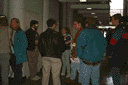
Here we see a crowd gather as the time for Steve's talk approaches.
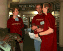
It was only with constant teamwork and communication that we were able to
get anything done. Things went better than expected.
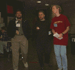
Here we see Jonathan Stark and Ben Gross talking with Woz.
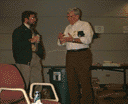
Even during lunch, Wozniak was more than happy to talk with everyone.
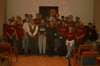
Here are most of the people that helped organize and run the conference. Woz
is hiding in the back row, about half way to the right.
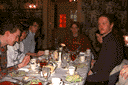
The dinner at the Illini Union was, shall we say, interesting. Here
we can see the effect the salad dressing had on Greg.
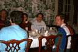
Another table of people attempting to figure out the content of the salad
dressing.
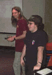
Greg and Brian are hanging out at the MechMania programming contest final.
Greg is happy because he got to yell "sunday Sunday SUNDAY" into the mic,
and Brian is grateful to know he can get some sleep as soon as this is over.
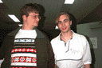
Brandon looks a little worried about Dave, who had to stay up late
helping with the programming contest and his Java talk.
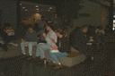
Lunch on Sunday was a relaxing picnic in the DCL hallway. It gave
people a chance pick their favorites for the final round of the
programming contest, which was comming up next.
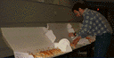
Another good thing about Sunday lunch: there was plenty of food for seconds!
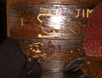
Murphy's Pub is a place we all like to hang out. I think it is the only
bar in the world where you will find an NCSA Mosaic logo carved into the
benches.
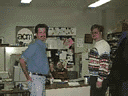
The office turned into a central area for meeting people and getting in
contact with the people who were needed to get things done. It was a big
mess by the end of the conference.
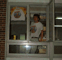
Jon Roma is a HUGE Zippy the Pinhead fan. Here we see him hanging out of his
new office window (into the hallway) showing off his newer Zippy shirt. He
was very sad when the one taped to the window became to small for him to wear.
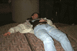
Jeff shows how we all felt when it was finally over.

Last updated: 7/15/96 pbleisch@uiuc.edu
{kind=link}
{kind=link}
{kind=link}
{kind=link}
{kind=link}
{kind=link}
{kind=link}
{kind=link}
{kind=link}
{kind=link}
{kind=link}
{kind=link}
{kind=link}
{kind=link}
{kind=link}
{kind=link}
{kind=link}
{kind=link}
{kind=link}
{kind=link}